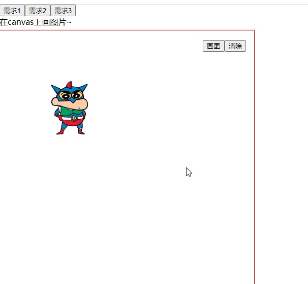
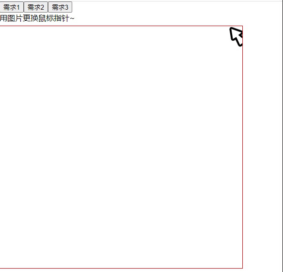
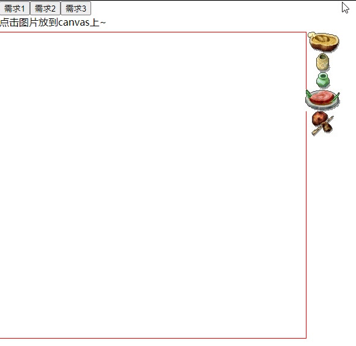

[hooks学习笔记]怎么使用hooks达到逻辑的复用
之前写 class 组件时，一些功能模块的一些 state/function，很难复用。 试过 create-react-class，把 state/function 按功能分小块一起拼装成一个 class，但是看起来还是不太舒服 react16.8 出了 hooks 之后，开始学习 hooks，感觉这样写的话会清晰一些，用例子带大家感受一下。 例子放在 github 上:https://github.com/ranmeizi/hooks-example
小例子
写了 3 个 canvas 页面，对应了几个功能交叉的需求，是可以复用的
- 画图

- 画鼠标

- 点击画图

从需求出发
分析一下这三个需求：
- 这个需求是把图片绘制到 canvas 上，这是需求 1，2，3 都有的
- 这个需求是鼠标移动时，在对应位置绘制鼠标的图片，绘制逻辑可以复用 1 的
- 这个需求复用就更多了，① 鼠标移动的时候绘制指针，② 点击图片的时候更改指针，③ 点击 canvas 的时候绘制图片。① 完全是需求 2 已经实现了的，② 写一个 click 事件修改鼠标移动的 IMG 就可以完成，③ 写一个 click 事件用需求 1 画下图就可以了
用 hooks 实现
我学习的时候直接看的 react 的文档。链接：https://zh-hans.reactjs.org/docs/hooks-intro.html 用到的是自定义 hooks，先抽出这个功能自己的状态和行为，写到自定义 hooks 里，然后可以暴露出一些接口出去，每个 hooks 是一个 function，可以 export 出去，别的组件使用的时候 import 要用的 hooks，就可以把逻辑拼装起来。
- 自定义 hooks 我写了 2 个自定义 hooks，分别对应画图和鼠标移动 而且可以看到，useMouseImg 这个 hooks 里也是引用了 useDrawImg 的，hooks 里也是可以继续套 hooks 的
import { useState, useEffect, useRef } from 'react';
// 画图
export function useDrawImg(canvas) {
function drawImage(x, y, img) {
const ctx = canvas.current.getContext('2d');
ctx.drawImage(img, x, y, img.width, img.height);
}
function clear() {
const { height, width } = canvas.current;
const ctx = canvas.current.getContext('2d');
ctx.clearRect(0, 0, width, height);
}
return {
drawImage,
clear,
};
}
// 鼠标移动
export function useMouseImg(canvas) {
const img = useRef(null);
const { drawImage, clear } = useDrawImg(canvas);
useEffect(() => {
console.log(111);
const el = canvas.current;
el.addEventListener('mousemove', move);
return () => {
el.removeEventListener('mousemove', move);
};
}, []);
function move(e) {
const { offsetX: x, offsetY: y } = e;
clear();
drawImage(x, y, img.current);
}
function setImg(image) {
img.current = image;
}
return [img, setImg];
}
- 组装 hooks Page1 使用 hooks 暴露出的 drawImage API 画图就可以了，clear 可以清除画布，没啥可组装的
import React, { useEffect, useRef } from 'react';
import { useDrawImg } from '../hooks/draw';
import lbxx from '../../assets/lbxx.png';
export default function () {
const canvas = useRef(null);
const { drawImage, clear } = useDrawImg(canvas);
useEffect(() => {
draw();
}, []);
function draw() {
let img = new Image();
img.src = lbxx;
img.onload = () => drawImage(100, 100, img);
}
return (
<div style={{ position: 'relative' }}>
<canvas
style={{ position: 'absolute', top: 0, left: 0, border: '1px solid red' }}
ref={canvas}
height="500"
width="500"
/>
{/* 按钮组 */}
<div style={{ position: 'absolute', left: '400px', top: '20px' }}>
<button onClick={draw}>画图</button>
<button onClick={clear}>清除</button>
</div>
</div>
);
}
Page2 更简单了，完全让 hooks 自己实现，只是在渲染后给 hooks 传了一个鼠标指针的图片
import React, { useEffect, useRef } from 'react';
import { useDrawImg, useMouseImg } from '../hooks/draw';
import lbxx from '../../assets/mouse.png';
let img = new Image();
img.src = lbxx;
export default function () {
const canvas = useRef(null);
const [cursor, setImg] = useMouseImg(canvas);
useEffect(() => {
setImg(img);
}, []);
return (
<div style={{ position: 'relative' }}>
<canvas
style={{ position: 'absolute', top: 0, left: 0, border: '1px solid red', cursor: 'none' }}
ref={canvas}
height="500"
width="500"
/>
</div>
);
}
Page3 这块是组装 hooks 的部分了，Page3 的需求用到了很多 1，2 里面都有的逻辑 不过道理还是一样，是我在需求中说的，使用了 2 个 click 事件，去调用 hooks 中的 api
import React, { useRef, useEffect } from 'react';
import { useDrawImg, useMouseImg } from '../hooks/draw';
import lbxx from '../../assets/mouse.png';
import fcskdrt from '../../assets/fcskdrt.jpg';
import nai200 from '../../assets/nai200.jpg';
import qi60 from '../../assets/qi60.jpg';
import kzp from '../../assets/kzp.jpg';
import wlssdmg from '../../assets/wlssdmg.jpg';
let img = new Image();
img.src = lbxx;
export default function () {
const canvas = useRef(null);
const canvasCursor = useRef(null);
const { drawImage, clear } = useDrawImg(canvas);
const [cursor, setImg] = useMouseImg(canvasCursor);
useEffect(() => {
setImg(img);
// 绑定事件
canvasCursor.current.addEventListener('click', onCanvasClick);
}, []);
function onCanvasClick(e) {
const { offsetX: x, offsetY: y } = e;
// 画画
if (cursor.current !== img) {
console.log(x, y, cursor.current);
drawImage(x, y, cursor.current);
}
// 改变光标
setImg(img);
}
function changeImg(e) {
setImg(e.target);
}
return (
<div style={{ position: 'relative' }}>
<canvas
style={{ position: 'absolute', top: 0, left: 0, border: '1px solid red', cursor: 'none' }}
ref={canvas}
height="500"
width="500"
/>
<canvas
style={{ position: 'absolute', top: 0, left: 0, border: '1px solid red', cursor: 'none' }}
ref={canvasCursor}
height="500"
width="500"
/>
<div
style={{
display: 'flex',
flexDirection: 'column',
alignItems: 'center',
position: 'absolute',
left: '500px',
}}
>
<img onClick={changeImg} src={fcskdrt} alt="" />
<img onClick={changeImg} src={nai200} alt="" />
<img onClick={changeImg} src={qi60} alt="" />
<img onClick={changeImg} src={kzp} alt="" />
<img onClick={changeImg} src={wlssdmg} alt="" />
</div>
</div>
);
}
可以看到我 Page3 中没有写任何画图的 function，也没有监听鼠标移动，全是用之前写好的 hooks 实现的，这样就达到了逻辑复用，在我们开发中也可以把明显可复用的逻辑抽到 hooks 中写，节省自己的时间，代码也变得好维护。